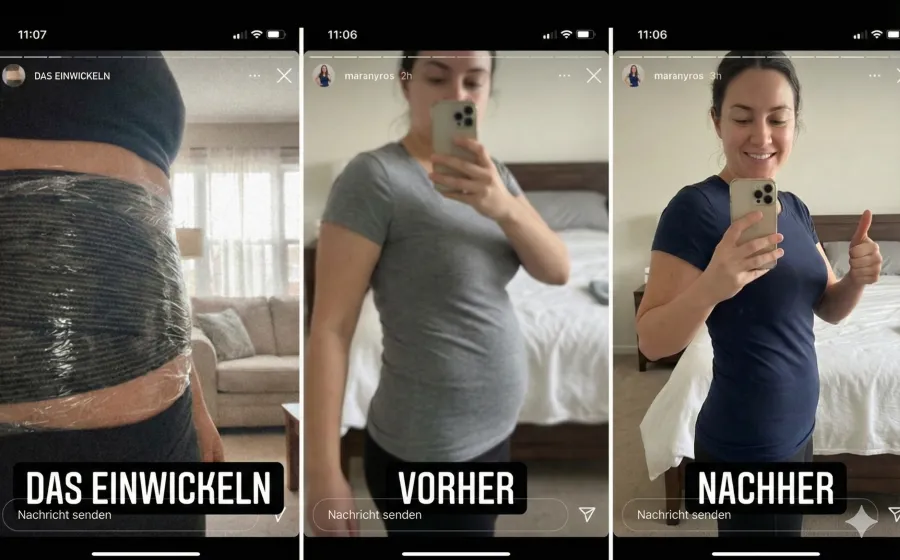
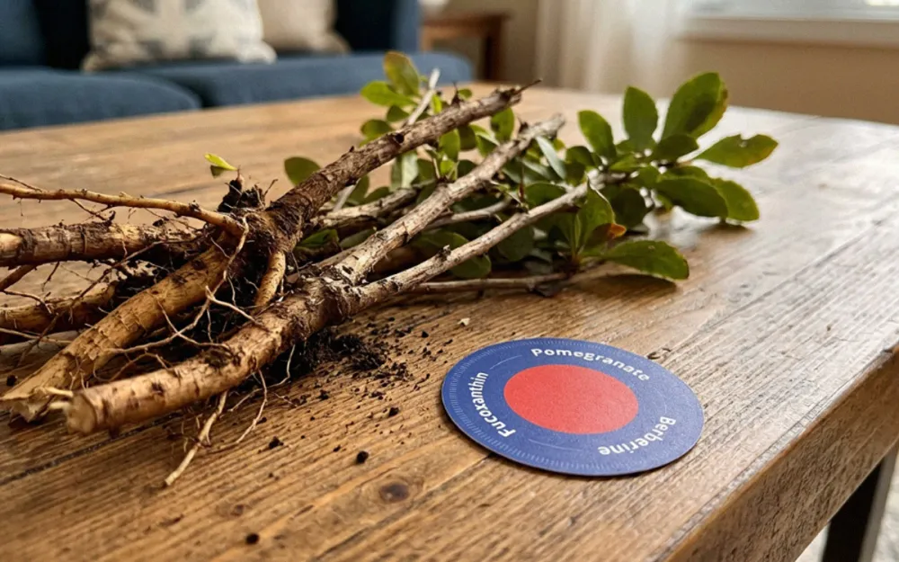
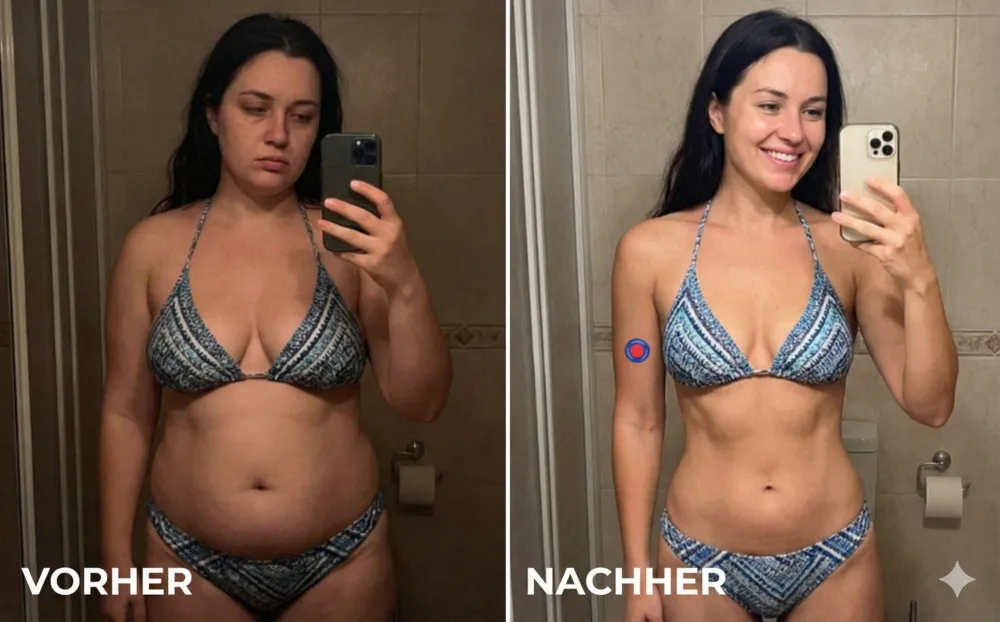
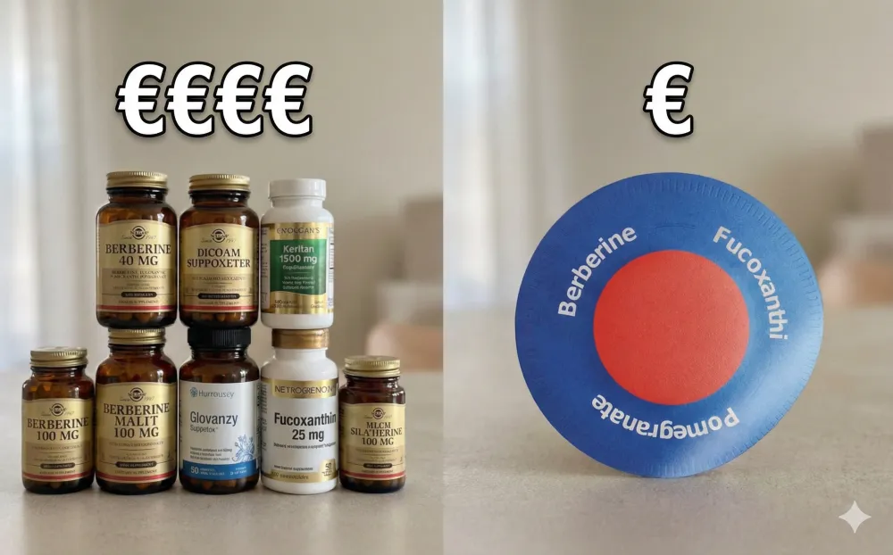
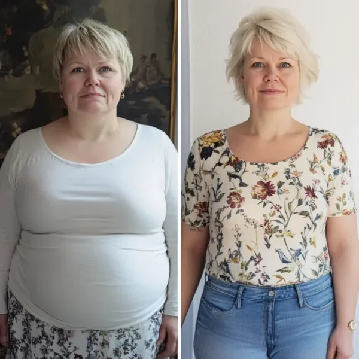
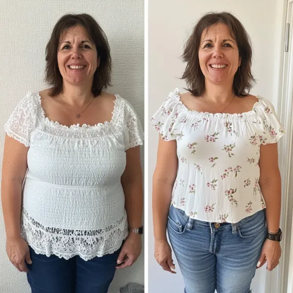

Sie verlor 24 Kilo mithilfe eines uralten Pflanzengeheimnisses, das die moderne Medizin zu VERBERGEN versuchte. Jetzt ist die Pharmaindustrie wütend, dass es zum Mainstream wird.
Dieses 2000 Jahre alte pflanzliche Heilmittel wäre beinahe für immer verloren gegangen. Bis eine verzweifelte Frau entdeckte, dass es der Schlüssel zu mühelosem Abnehmen war.
Okay, ich muss Ihnen etwas sagen, was Sie vielleicht wütend machen wird.
Seit JAHREN gibt es eine natürliche Lösung zur Gewichtsabnahme, die tatsächlich funktioniert.
Kein Hungern. Keine anstrengenden Trainingseinheiten. Keine gefährlichen Chemikalien.
Einfach nur Pflanzen. Bestimmte Pflanzen, die indigene Kulturen seit Jahrhunderten verwenden.
Und die Mainstream-Abnehmindustrie?
Sie wollen nicht, dass Sie davon erfahren.
Weil man eine Pflanze nicht patentieren kann. Man kann nicht 1500 € im Monat für etwas verlangen, das in der Erde wächst. Man kann kein Milliarden-Euro-Imperium auf uralter Weisheit aufbauen, die allen gehört.
Also haben sie es verborgen.
Bisher.
Mein Name ist Gloria. Ich bin 59. Und ich wäre beinahe gestorben, weil ich „moderne“ Abnehmtipps befolgt habe.

Ich übertreibe nicht.
Vor zwei Jahren habe ich eines dieser trendigen Nahrungsergänzungsmittel zur Gewichtsreduktion ausprobiert, über die alle sprachen. Die Promi-Versionen. Ich habe mir einen Arzt in einem Online-Lehrvideo dazu angesehen.
Innerhalb von drei Wochen war ich in der Notaufnahme.
Starke Übelkeit. Konnte keine Nahrung bei mir behalten. Herzrasen, das mich glauben ließ, ich würde sterben.
Der Notarzt warf einen Blick auf meine Akte und seufzte.
„Sie sind die Vierte in dieser Woche“, sagte er. „Diese Nahrungsergänzungsmittel sind für manche Menschen zu stark. Ihr Körper stößt sie ab.“
Ich bin 12 Kilo leichter nach Hause gekommen – aber das lag am Erbrechen, nicht am Fettabbau. Ich war schwächer als je zuvor. Verängstigt. Und immer noch übergewichtig.
Da überraschte mich meine Tante Rosa.
Tía Rosas Geheimnis aus ihrer „alten Heimat“
Meine Tante Rosa ist 74 Jahre alt.
Sie wuchs in einem kleinen Dorf in Mexiko auf, von wo aus die nächste Apotheke drei Busstunden entfernt war. Wenn Menschen krank wurden, verwendeten sie Pflanzen. Wenn sie abnehmen mussten, griffen sie auf Pflanzen zurück. Wenn etwas nicht stimmte, war die Antwort immer dieselbe:
Die Natur hat etwas dafür.
Rosa hatte zwanzig Jahre lang mitangesehen, wie ich mit meinem Gewicht kämpfte. Sie sahen mir dabei zu, wie ich jede Diät, jede Pille, jedes Programm ausprobierte. Sah, wie ich wegen dieser Nahrungsergänzungsmittel im Krankenhaus landete.
Schließlich nahm sie mich bei der Quinceañera meiner Cousine beiseite.
„Mija“, sagte sie. „Warum vergiftest du dich immer wieder mit Chemikalien, wenn Gott uns doch schon alles gegeben hat, was wir brauchen?“
Sie drückte mir ein kleines Päckchen in die Hand.
„Das ist es, was die Frauen in unserem Dorf seit Generationen benutzen.“
Im Inneren befanden sich kleine, durchsichtige Pflaster.
Purisaki Berberin-Pflaster.

„Pflaster?“ Ich war verwirrt. „Tante, ich habe schon jedes Nahrungsergänzungsmittel ausprobiert –“
Sie hob ihre Hand.
„Das sind nicht diese Pillen, die einem den Magen zerstören. Diese gehen über die HAUT. So, wie Medizin verabreicht werden sollte. So, wie es unsere Vorfahren kannten. Dies ist jedoch eine modernisierte Version – die Wissenschaftler haben das, was unsere Großmütter wussten, aufgegriffen und noch wirkungsvoller gemacht. Dieselbe uralte Pflanzenart, aber auf eine Weise verabreicht, die tatsächlich mit dem Körper zusammenwirkt.“
Sie begann, die Zutaten aufzuzählen. Pflanzen, von denen ich noch nie gehört hatte. Antike Heilmittel. Pflanzliche Verbindungen, die seit Jahrtausenden verwendet wurden.
„Probiere es einen Monat lang aus“, sagte sie. „Was hat die moderne Medizin für dich getan, außer dich kränker zu machen?“
Sie hatte Recht.
Die uralten Pflanzen, die die Pharmaindustrie Ihnen verschweigt

Ich ging nach Hause und recherchierte jeden einzelnen Inhaltsstoff dieser Pflaster.
Was ich dann vorfand, machte mich wütend.
Diesen Pflanzen standen BERGE wissenschaftlicher Forschung zugrunde. Echte Studien. Echte Ergebnisse. Aufgedeckt von echten Wissenschaftlern.
Und dennoch sprach niemand über sie.
Folgendes ist tatsächlich in diesen Pflastern enthalten:


Warum Purisaki Berberin-Pflaster? Warum schluckt man diese Kräuter nicht einfach?

Das ist wichtig.
Man könnte alle diese Zutaten als Pillen kaufen. Das versuchen die Leute schon seit Jahren.
Das Problem? Das Verdauungssystem.
Bis die meisten oralen Nahrungsergänzungsmittel die Magensäure und den Darmtrakt passiert haben, wird ein großer Teil der Wirkstoffe zerstört. Einige Studien legen nahe, dass bis zu 85 % der Nahrungsergänzungsmittel in Tablettenform nie in den Blutkreislauf gelangen.
Sie bezahlen im Grunde dafür, teuren Urin herzustellen.
Pflaster lösen dieses Problem vollständig.
Die Inhaltsstoffe werden direkt über die Haut in den Blutkreislauf aufgenommen. Keine Zerstörung im Verdauungstrakt. Keine Magenbeschwerden. Kein Wirkungsverlust.
Studien zeigen, dass die transdermale Verabreichung die Bioverfügbarkeit im Vergleich zu oralen Nahrungsergänzungsmitteln um bis zu 1.500 % erhöhen kann.
Fünfzehn mal MEHR von den guten Inhaltsstoffen erreichen tatsächlich Ihre Zellen.
So sollte Pflanzenmedizin ursprünglich angewendet werden. Nicht in Pillen gestopft, die Ihr Darm zerstört.
VERFÜGBARKEIT PRÜFENMeine Ergebnisse: 24 Kilo in 5 Monaten. Natürlich.
Ich habe die Purisaki Pflaster am Tag nach der Übergabe durch Tante Rosa angefangen zu benutzen.
Ganz ehrlich – nach dem Albtraum mit der Injektion hatte ich Angst, irgendetwas auszuprobieren. Aber das waren Pflanzen. Natürliche Verbindungen. Nichts Synthetisches.
Wie schlimm sollte es schon sein können?
Woche 1: Das Erste, was mir auffiel, war nicht der Gewichtsverlust. Es war die Stille. Dieses ständige Gedankenkreisen ums Essen – was soll ich essen, wann kann ich essen, was ist im Kühlschrank – hat einfach nachgelassen. Als hätte jemand ein Radio leiser gedreht, das jahrelang in voller Lautstärke lief. Ich habe 2 Kilo abgenommen. Aber ehrlich gesagt war der innere Frieden mehr wert.
Woche 2: Ich war auf einer Geburtstagsfeier und habe EIN Stück Kuchen gegessen. Eins. Dann hörte ich auf. Nicht etwa, weil ich „brav“ war. Weil ich wirklich zufrieden war. Das ist mir noch nie gelungen. Noch nie. Insgesamt 4 Kilo abgenommen.
Monat 1: 8 Kilo weniger. Ich hatte meine Ernährung nicht grundlegend verändert. Hatte nicht mit dem Sport angefangen. Ich habe einfach … von Natur aus weniger gegessen. Ich habe aufgehört zu naschen. Ich war mit den normalen Portionsgrößen zufrieden. Meine Schwester fragte, was ich mache. Ich war noch nicht bereit, es zu teilen.
Monat 2: 13 kg insgesamt. Ich musste mir neue Jeans kaufen. Zum ersten Mal seit Jahren brauchte ich KLEINERE Größen statt größerer. Ich war voller Energie. Keine Einbrüche am Nachmittag. Kein Koffein erforderlich.
Monat 3: Die Waage zeigte 18 Kilo Gewichtsverlust an. Mein Arzt konnte meine Untersuchungsergebnisse kaum fassen. Blutdruck gesunken. Der Blutzuckerspiegel verbesserte sich. Alles entwickelt sich in die richtige Richtung. „Was auch immer Sie tun“, sagte sie, „machen Sie weiter so.“ Ich habe ihr von den Pflastern erzählt. Von den Pflanzen. Sie war zunächst skeptisch – wie die meisten westlichen Ärzte. Aber sie konnte meine Ergebnisse nicht anfechten.
Monat 5: 24 Kilo abgenommen.
VIERUNDZWANZIG KILO.
Mit Pflanzen. Uralte Pflanzen, die die Menschen seit Jahrtausenden nutzen.
No injections. No prescriptions. No emergency room visits.
Einfach Natur. Auf dem richtigen Weg verabreicht.
Die Abnehmindustrie will nicht, dass Sie wissen, dass dies funktioniert
Ich will ganz ehrlich mit Ihnen sein.
Hinter diesen Aufnähern steckt kein riesiges Werbebudget. Keine Werbung mit Prominenten. Kein Milliardenkonzern drängt sie auf.
Warum? Weil bei pflanzenbasierten Lösungen keine GROSSEN Gewinnspannen zu erzielen sind.
Man kann nicht 1500 € im Monat für Berberin verlangen. Mit Algenextrakt lässt sich keine lebenslange Abhängigkeit von Medikamenten erzeugen. Mit Granatapfelöl kann man kein Unternehmen aufbauen, das an der Börse zum Liebling der Kunden wird.
Die etablierte Industrie ignoriert es also. Vergräbt es. Hofft, dass Sie weiterhin ihre teuren synthetischen Lösungen kaufen, die Sie krank machen.
Aber die Forschung existiert. Das traditionelle Wissen ist vorhanden. Die ERGEBNISSE liegen vor.
Man muss einfach bereit sein, über das hinauszuschauen, was einem verkauft wird.
Eine Warnung vor Nachahmungen

Eine Warnung muss ich aussprechen.
Nachdem Lindas Geschichte in unserer Gemeinde die Runde machte, erreichten uns beunruhigende Berichte. Leute, die „ähnliche“ Pflaster von irgendwelchen Webseiten gekauft hatten. Null Ergebnisse. Manche bekamen sogar Hautreaktionen von billigen Plagiaten.
Wenn etwas so gut funktioniert, reagieren Betrüger blitzschnell.
Die authentischen Purisaki Berberin-Pflaster sind nur erhältlich über die offizielle Website mit Verifizierung. Bitte verschwenden Sie nicht Ihr Geld – und riskieren Sie nicht Ihre Gesundheit – für Fälschungen.
JETZT VERFÜGBARKEIT PRÜFENBereit, das auszuprobieren, was wirklich funktioniert?

Ich kann nicht versprechen, dass diese Pflaster bei jedem genau gleich funktionieren.
Körper sind unterschiedlich. Die Stoffwechselprozesse sind unterschiedlich. Die Ausgangspunkte sind unterschiedlich.
Aber ich kann Ihnen Folgendes versprechen:
Das sind echte Pflanzen. Seit Jahrhunderten erforscht. Gestützt auf moderne wissenschaftliche Erkenntnisse. Die Wirkstoffe werden so verabreicht, dass sie tatsächlich in Ihren Blutkreislauf gelangen.
Keine synthetischen Chemikalien. Keine beängstigenden Nebenwirkungen. Keine Besuche in der Notaufnahme.
Hier trifft uralte Weisheit auf moderne Übertragungstechnologie.
Wenn Sie schon alles andere versucht haben …
Wenn Sie es satt haben, Ihrem Körper Chemikalien zuzuführen …
Wenn Sie bereit sind, MIT der Natur statt gegen sie zu arbeiten …
Vielleicht ist es dann an der Zeit, das auszuprobieren, was sich seit Jahrtausenden bewährt hat.
ENTDECKEN SIE DIE NATÜRLICHE LÖSUNGBegrenzte Verfügbarkeit. Diese Produkte werden nicht in einer pharmazeutischen Fabrik massenhaft hergestellt, sondern sind sorgfältig zusammengestellte Pflaster auf pflanzlicher Basis. Wenn sie ausverkauft sind, muss auf die nächste Charge gewartet werden.
Was echte Frauen erleben

Ich habe innerhalb von zehn Jahren 14.000 € für Behandlungen zur Gewichtsreduktion ausgegeben. Mit diesen Pflanzenbeeten habe ich in vier Monaten 21 Kilo abgenommen. Ich könnte weinen, wenn ich an das verschwendete Geld denke.

Ich hatte panische Angst vor Spritzen und ihren Nebenwirkungen. Diese Pflaster fühlten sich sicher an, weil sie nur Pflanzen enthielten. 17 Kilo abgenommen und keinerlei Nebenwirkungen.

Meine Großmutter erzählte immer von traditionellen pflanzlichen Heilmitteln. Diese Pflaster fühlen sich an wie eine Hommage an diese Weisheit. Ich habe 18,5 Kilo abgenommen und meine Großmutter wäre stolz.